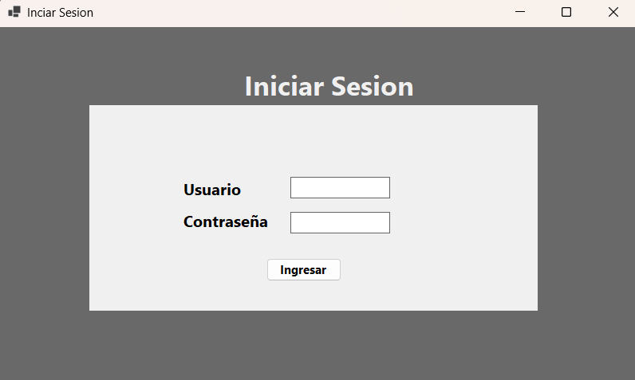
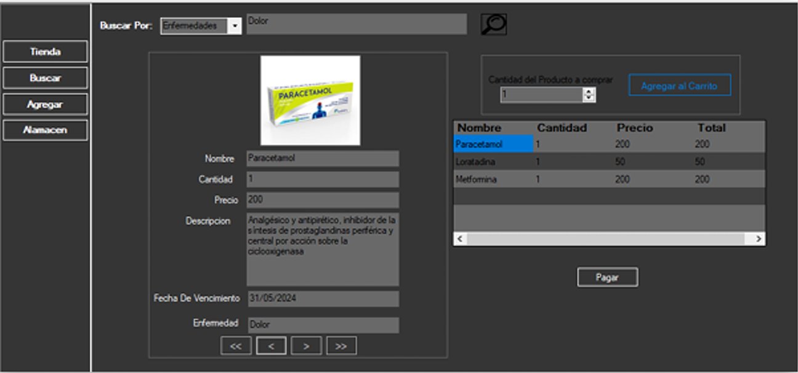
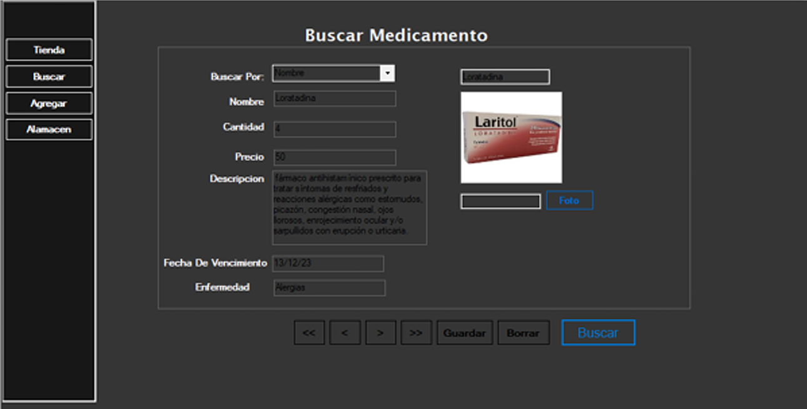
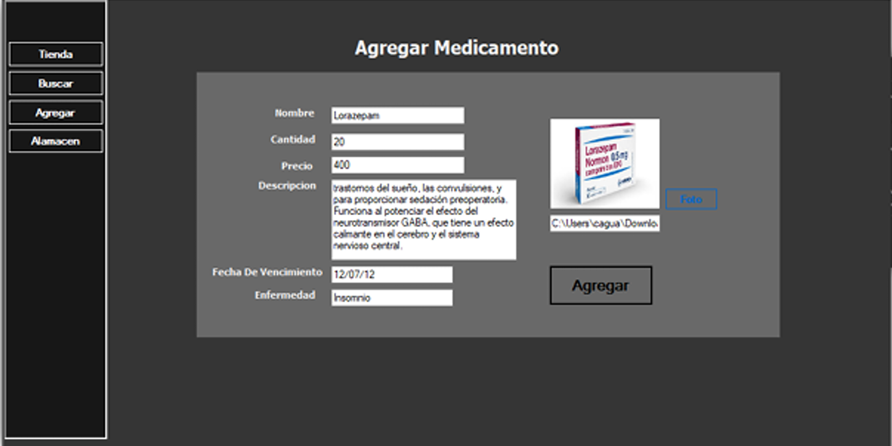

Esta aplicación de escritorio fue desarrollada para una farmacia local con el objetivo de digitalizar y optimizar la gestión de su inventario de medicamentos. Permite registrar, consultar, actualizar y eliminar productos de forma rápida e intuitiva.
El sistema cuenta con un módulo de autenticación para proteger los datos, una interfaz amigable que muestra el stock disponible, y herramientas de búsqueda y filtrado para encontrar medicamentos por nombre, categoría o proveedor.
La base de datos en Access garantiza un almacenamiento ligero y fácil de respaldar, mientras que la lógica de negocio en C# asegura un rendimiento estable y seguro.



